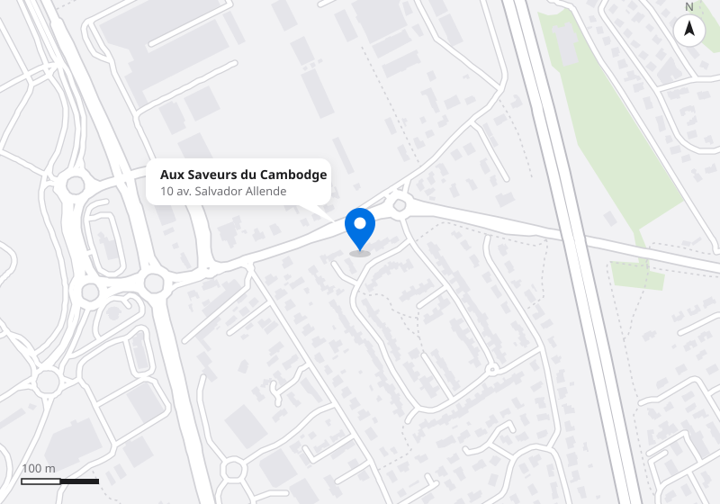

Aux Saveurs du Cambodge
Cuisine cambodgienne faite maison.
Saint-Alban. Commandes et réservations par téléphone.
Porc au caramel
Mijoté, laqué, sucré-salé.
10,50 €, servi avec du riz nature.
Tout est fait maison. Avec des produits frais. Et beaucoup d’amour.
Citronnelle, saté, caramel, lait de coco : les saveurs du Cambodge, dans une carte de 86 plats.
Découvrir la carteHoraires
Du lundi au vendredi : 12 h – 14 h et 18 h – 21 h 45 · Samedi et dimanche : 18 h – 21 h 45
| Jour | Midi | Soir |
|---|---|---|
| Lundi | 12 h – 14 h | 18 h – 21 h 45 |
| Mardi | 12 h – 14 h | 18 h – 21 h 45 |
| Mercredi | 12 h – 14 h | 18 h – 21 h 45 |
| Jeudi | 12 h – 14 h | 18 h – 21 h 45 |
| Vendredi | 12 h – 14 h | 18 h – 21 h 45 |
| Samedi | Sur commande | 18 h – 21 h 45 |
| Dimanche | Sur commande | 18 h – 21 h 45 |
Le samedi et le dimanche midi, uniquement sur commande passée la veille.
On vous garde une petite place ?
10 avenue Salvador Allende, 31140 Saint-Alban.
Au nord de Toulouse. Commandes et réservations par téléphone.
